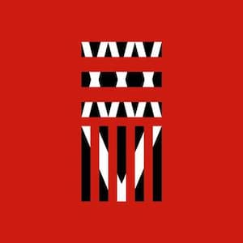

35xxxv
11 de febrero de 2015
その気持ちに嘘をついた (To tell the truth, I guess I've been lied?)
その心はひどく苦しんでいる (But I didn't need to be specialized?)
僕の暗闇の中にはもう一匹いる(There is something else so deep in the mind?)
(A name)
そう、それは形を変えて外に出ようとする (Say the truth and the pride are worthless?)
心の奥にひそむ暗闇や過去を餌に (And name)
とても僕には抑えきれないほど生き延びてしまう(I cannot control)
でもそれを抑えたくて、手に入れたいものが今はある (something wish for?)
And I can't even speak
So I scream
So I scream
So I scream
Take me to the top, take me to the top
Take me to the top, take it
Take me to the top, take me to the top
Bring me up to pull me down
Take me to the top, take me to the top
Take me to the top, take it
Take me to the top, take me to the top
You're the one to push me over
Let's go
I've never what you really needed
You won't stop, you can't stop, can't let go
Everybody knows
Come with me and listen close
Take me now, I'll take you home
Way too close when I'm far away from you
And all the crazy shit we do
Take me to the top, take me to the top
Take me to the top, take it
Take me to the top, take me to the top
Bring me up to pull me down
Take me to the top, take me to the top
Take me to the top, take it
Take me to the top. take me to the top
You're the one to push me over
I wonder why
Oh, you do this to me every time
Slowly creeping into my mind
Oh, I can see it in your eyes
Suffocating till the day we die
The way too close when I'm far away from you
And all the crazy shit we do
Take me to the top, take me to the top
Take me to the top, take it
Take me to the top, take me to the top
Bring me up to pull me down
Take me to the top, take me to the top
Take me to the top, take it
Take me to the top, take me to the top
You're the one to push me over
I wonder why
I wonder why
I wonder why
Switch the light off
Welcome to the night
What's the problem?
Not gonna make it right
Bite the bullet then pull the trigger
Hold tight
It's a feeling you know
言葉を飲み込んだ君の
何かを訴える目つきは
例えれないくらい 冷たいの
I take, take, take, take it for no one
But I don't know what to call it (call it)
When I know I don't care anymore
いたずらに過ぎ去ってた昨日
Cry out
Will you tell me now?
So we say we want change and never be the same and yeah, yeah, yeah,
yeah
Cry out
Oh, I'm burning out
Can't you hear the sound?
すべてが裏腹な僕の
弱みをつかもうとしても
さらに固く閉ざして見せるの
I don't take shit off of no one
それでも強引な君は
何かをチラつかせて見せて
あたかも平然を装うの
I take, take, take, take it for no one
But I don't know what to call it (call it)
When I know I don't care anymore
In the end I know we'll all be gone
Cry out
Will you tell me now?
So we say we want change and never be the same and yeah, yeah, yeah,
yeah
Cry out
Oh I'm burning out
Can't you hear the sound?
Spitting gas on the fire
That's burning this town
Pieces really conspire
We shut'em all down
Then suddenly I'm breaking past the lies
It's something magical
We outta say a lullaby
Into the pain I go
Say our last goodbye
Suddenly
Tired of living the straight life outside the lines
Open up to disaster and paradise
We're standing on the edge
Then suddenly I'm breaking past the lies
It's something magical
We outta say a lullaby
Into the pain I go
Say our last goodbye
Suddenly
Where should I go? I cannot be the one I see in magazines
Where should I go? I cannot be the one I see in magazines
Where should I go? I cannot be the one I see in magazines
Where should I go? I cannot be the one I see in magazines
Then suddenly I'm breaking past the lies
It's something magical
We outta say a lullaby
Into the pain I go
Say our last goodbye
Suddenly
Suddenly
Then suddenly, yeah